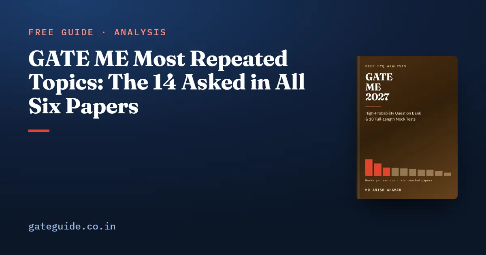

GATE ME Most Repeated Topics: The 14 Asked in All Six Papers

Fourteen technical topic groups were examined in every one of the six GATE ME papers from 2022 to 2026, and they carried 153 of the 510 technical marks. Seventeen more appeared in five of the six. This guide names them, explains how the count was made, and teaches why these 31 groups, about two thirds of the technical marks, are the core to secure before anything else.
In this guide
Key takeaways
- 14 technical topic groups appeared in all six counted papers, carrying 153 of 510 technical marks.
- 17 more appeared in five papers, carrying 174 marks.
- Together the 31 groups carry 327 of 510 technical marks, 64.1 per cent.
- The heaviest single group is the mechanics of machining, 18 marks in nine two-mark questions.
- All four main areas of General Aptitude also appeared in every paper.
- A low count is weak evidence; never treat it as a reason to skip.
What a topic group is
A topic group is a cluster of syllabus phrases that the book treats as one unit, such as "Radiation: Stefan-Boltzmann and Wien's laws, grey surfaces, view factors, networks". Each counted question sits in exactly one group. The book's grouping gives 86 technical groups.
A group's paper count is how many of the six papers set at least one question in it. "6 of 6" means every paper; it says nothing about how many marks each time.
Remember: Six papers in five years show patterns, not trends. A group in all six papers is the strongest signal the record can give, and it is still not a promise.
The 14 groups examined in all six papers
| Topic group | Subject | Marks, six papers |
|---|---|---|
| Mechanics of machining, cutting tools, tool life, machining economics | Materials, Manufacturing and Metrology | 18 |
| Engineering materials: crystal structure, phase diagrams, heat treatment | Materials, Manufacturing and Metrology | 14 |
| Calculus | Engineering Mathematics | 14 |
| Second law, entropy, availability and irreversibility | Thermodynamics and Applications | 13 |
| Convection | Heat Transfer | 11 |
| Radiation | Heat Transfer | 10 |
| Free vibration and damping | Theory of Machines and Vibrations | 10 |
| Complex variables | Engineering Mathematics | 10 |
| Plane trusses and frames | Engineering Mechanics | 10 |
| Fluid acceleration, continuity and velocity potential | Fluid Mechanics | 10 |
| Inventory control | Industrial Engineering | 9 |
| Vector calculus | Engineering Mathematics | 8 |
| CAD/CAM, NC/CNC and automation | Materials, Manufacturing and Metrology | 8 |
| Machining operations, abrasive and non-traditional machining, work holding | Materials, Manufacturing and Metrology | 8 |
Notice the spread. Eight of the ten technical subjects have at least one group here. Only Mechanics of Materials and Machine Design have none: neither has a group examined in all six papers.
The 17 groups examined in five papers
| Subject | Groups in five of six papers |
|---|---|
| Engineering Mathematics | Ordinary differential equations; linear algebra; probability and statistics; numerical methods |
| Materials, Manufacturing and Metrology | Forming; casting; metrology; joining; additive manufacturing |
| Theory of Machines and Vibrations | Gears and gear trains; plane mechanisms |
| Heat Transfer | One-dimensional conduction and fins; heat exchangers |
| Engineering Mechanics | Friction and its applications |
| Mechanics of Materials | Stress transformation and Mohr's circle |
| Thermodynamics and Applications | First law in closed and open systems |
| Industrial Engineering | Linear programming, transportation and assignment |
Why these 31 groups come first
Worked example: what share of the paper they cover
Add the two tiers. The six-paper groups carried 153 marks and the five-paper groups 174, so together:
That is 64.1 per cent of the technical marks set across six papers, from 31 of 86 groups. Fewer than four in ten groups carried nearly two thirds of the marks.
Per paper, it is about 54 marks a year if you add the book's rounded means for the 31 groups. Add the 28 fixed marks of General Aptitude and Engineering Mathematics, much of which already sits in this list, and the core covers most of a paper.
Trap: Reading "64 per cent of marks" as "64 per cent of my score is safe". A group's appearance is likely; the exact question is not. You still have to solve it, under time, with the right units.
The heaviest single group
The mechanics of machining, with cutting tools, tool life and machining economics, drew 18 marks in nine questions over six papers, and every one was a two-mark question. Merchant's circle, the shear angle and Taylor's tool-life equation are its working tools. If you learn one group to depth first, the record points here.
What the list does not tell you
A group missing from both tables is not therefore safe to skip. With six papers, a topic set once is as consistent with "rare" as with "not drawn yet". ME subjects also share methods. Machine Design shows only 2 counted marks in 2023, yet 4 more marks in that paper used its methods inside questions counted elsewhere.
Mechanics of Materials is the clearest case. No group in it reached six papers, yet the subject ran from 6 to 15 marks, and its stress analysis is used in Machine Design and Theory of Machines too.
In one line: Study the 31 groups to depth, work the rest, and read the never-asked and newly named topics briefly; skip only what the syllabus no longer names.
How to use the list
- Build your first pass around the 14 six-paper groups, subject by subject.
- Add the 17 five-paper groups as each subject comes up.
- Do General Aptitude alongside; its four main areas appeared in every paper, as the General Aptitude guide explains.
- Practise numericals in these groups on the GATE virtual calculator; many were NATs.
- Remember that IIT Madras set none of the counted papers; the guide to IIT Madras as organiser explains why no setter's taste can be read from them.
The marking of MCQ, MSQ and NAT is common to every paper; see the marking scheme guide, written for CSE but valid for ME. The book prints every one of the 86 groups with its marks in each paper, and ranks a hundred questions to work first, in the GATE ME 2027 book.
Quick revision
- 14 groups in all six papers: 153 of 510 technical marks.
- 17 groups in five papers: 174 marks.
- 31 groups together: 327 of 510, 64.1 per cent.
- Heaviest group: mechanics of machining, 18 marks, all two-mark questions.
- Mechanics of Materials and Machine Design have no six-paper group.
- A low count is weak evidence; read, do not skip.
- Secure the core first, then the never-asked and newly named topics.
Frequently asked questions
Which topics are asked every year in GATE ME?
Fourteen technical topic groups appeared in all six counted papers from 2022 to 2026, carrying 153 of the 510 technical marks. They include the mechanics of machining, engineering materials, calculus, the second law and entropy, convection, radiation, free vibration, plane trusses, fluid kinematics and inventory control. That is a six-paper pattern, not a guarantee for 2027.
What are the most important topics for GATE ME 2027?
By the counted record, the 31 topic groups examined in five or six of the six papers carry 327 of the 510 technical marks, 64.1 per cent. Secure those first. Then give the topics the 2027 syllabus names for the first time a short reading, because no past paper can prepare you for them.
Which GATE ME topic carries the most marks?
The mechanics of machining, with cutting tools, tool life and machining economics, drew 18 marks over the six counted papers, in nine questions, every one at two marks. It is the heaviest single topic group in the record, with a mean of 2.8 marks a year, and it appeared in all six papers.
Can I skip topics that appeared only once in GATE ME?
Not safely. With six papers, a topic set once is as consistent with rare as with not drawn yet, and the record cannot tell the two apart. ME subjects also share methods, so a skill can show a low count of its own while being used inside questions counted elsewhere. Read low-count topics briefly instead of skipping them.
Sources
- GATE 2027 official website (IIT Madras)
- GATE 2027 ME syllabus (IIT Madras)
- GATE 2026 ME question paper (IIT Guwahati)
Dates, fees and the syllabus are set by the GATE 2027 organising institute and can change. Always confirm at gate2027.iitm.ac.in.